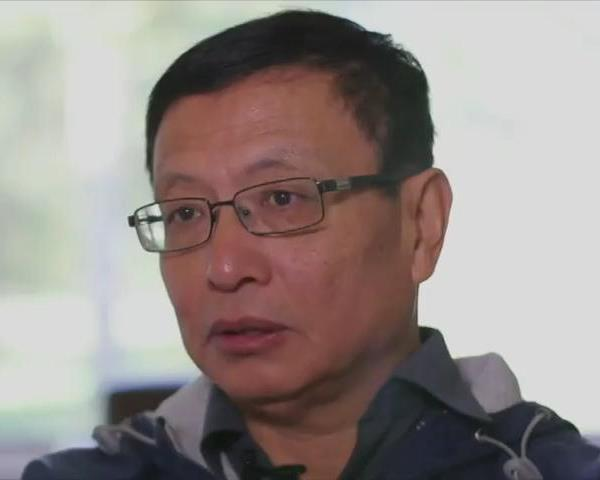

物理是研究我們所在的這個宇宙的學術，必須緊密地紮根在實験結果上。數學則是純粹的邏輯推論，連它的前提（叫Axiom，公理）都不須與現實有什麼關係，所以自然没有實験上的依據。數學界因此對邏輯的嚴謹早就有絶對的要求，以避免出現像超弦這類胡扯蛋的理論。如此一來，能够出版的論文數目很少，能當上正教授的也就不多；可是每所大學都必須開大一微積分，教學的工作量是很大的。解決這個矛盾的辦法，就是雇用講師。講師的薪水很低，而且合約是一年期的，每年都必須重新續約，完全没有工作保障。不過會想念數學的人，本來就常有淡薄名利的傾向，薪水再低，只要能安心作學問，還是有人願意幹。
我曾提過成功揭發超弦騙局的Peter Woit，就是在被排擠出物理界後，到Columbia當數學講師。今天跟大家介紹一下另一位當了十幾年數學講師，最近才成名的人。他是上海人，叫張益唐，生於1955年，十三歲時随父母遷居北京，两年後随母親下放，種了幾年菜，後來回北京到一個製鎻厰當金工。1978年，已經八年没讀書的張益唐考上重新開張的北京大學數學系。他後來迷上了數論（Number Theory，即研究整數-尤其是質數-的純數學學科），可是他的指導教授丁石孫，也就是當時北大的校長，是做代數幾何（Algebraic Geometry）的，結果他被强迫跟著做代數幾何。

張益唐，他似乎和Newton及Einstein一様，有Asperger syndrome（阿斯伯格綜合症），因此有超人的專注能力和記憶力，但是在與人相處上有些困難，不過比起Perelman還算好的。
張益唐雖然對代數幾何没有太大的興趣，但是當北大校長的研究生還是有好處的。1984年，我的台中一中學長莫宗堅（T.T.Moh），剛在前一年升任Purdue（普渡大學）數學系正教授，到北大訪問時，請校方推荐做代數幾何的學生，於是張益唐很幸運地拿獎學金進了Purdue的博士班。不過或許是因為張益唐的心一直不是真正在代數幾何上，两人處得並不愉快。張益唐在1991年畢業後，莫宗堅没有為他找到工作，此後两人也再没有聯繫。張益唐在此後的8年，基本上是為中國來的老同學和朋友打打工，包括在Kentucky州的汽車旅館和Subway快餐店做帳房。1999年，一個北大的老同學介紹他到University of New Hampshire（新罕布夏大學）當數學講師，這時他已經44歲了。
年復一年教微積分這種早已熟悉的簡單題材，當然是很無聊乏味的事；不過好處是教了一两年之後，根本就不須再花時間準備，所以空閒就多了，張益唐開始把大半天都花在圖書館細讀最新的數論成果。2003年，張益唐到紐約長島訪友的時候，被介紹給一位在中餐館打工的小姐， 不久後結了婚；但是太太不喜歡新罕布夏的冷天氣，没多久就轉戰到加州的美容店打工。張益唐一個人住在學校附近，除了上課就是做數學。2007年，他投出一輩子的第一篇論文，試圖解決很有名的Landau-Siegel Zeros Conjecture，論文上了預印本（Preprint）的網站，但是張益唐没有投給期刊，因為它是錯的；張益唐自己也知道，但是他繼續地想這個問題。一直到2010年，他終於決定換一個題目來作，也就是更加有名、也更為重要的（Siegel Zeros有可能是Riemann Hypothesis的反例，如果這反例真的成立，則Riemann Hypothesis會被推翻，而Riemann Hypothesis大概是當前數學界最大最重要的難題；在此我假設Landau-Siegel Zeros Conjecture的解答不決定Riemann Hypothesis的正確性）孿生質數假設（Twin Prime Conjecture）。
數學是個很成熟的學科，容易的題材早就做完了。如果是經過幾十代的成百成千天才數學家的努力，仍然解不出來的老問題，其難度可想而知。這種從17、18、19世紀留下來的老問題，最有名的有幾十個。在過去這幾代裡，大約是每十年能解答一個，每次都是驚動全球學術界的大事。上一次有這個層次的問題被解決，是2003年俄國的Grigori Perelman證明了Poincaré conjecture（龐加萊猜想）；再上一次，是1994年英國的Andrew Wiles證明了Fermat's Last Theorem（費馬最後定理，亦即a^n+b^n=c^n只有在n=2時才有正整數解）。Twin Prime Conjecture（孿生質數假設，也就是相差只有2的两個連續“孿生”質數有無限多對）就是這個最高等級的超難老問題之一。一個從來没有出版過任何論文的人說要把它解決掉，聽來就是癡人說夢。
2013年，58歲的張益唐終於投了他一輩子的第一篇給學術期刊的稿，基本上證明了孿生質數假設。我說“基本上”，是因為他只做了最大的突破，發明了一個新的、很强大的研究質數的方法，並用它來證明有無限多對質數相差不到70000000。從70000000要壓縮到2，還需要幾百篇繁瑣、没有什麼新意，卻又是必要的論文。學術界戲稱這種跟追他人突破的小論文為“Ambulance Chaser”（“追救護車的”，原本用來譏笑急著找生意的律師；我當初願意離開學術界，有部分原因是因為理解到絶大多數的學術論文都是追救護車的），而張益唐是不屑做這種事的；他已經急著回頭做Landau-Siegel Zeros Conjecture了。
學術界評價學者非常困難，用出版的記錄來決定一個人的成就只是不得已的最不壞的（Least Bad）手段；當然，絶大部分的人必須靠追救護車來出論文，其結果是遺珠的很多。連數學這様純邏輯的學科，最近20年的两個大突破都是由圈（指正規的研究職位）外的無名小卒（即張益唐和Grigori Perelman）所完成的。我很佩服他們的執著，也很慶幸他們有了美好的結局（張益唐直升了正教授，而且成為台灣中研院的院士；Perelman卻拒絶了一切金銭和職業上的回報，辭職躲回母親家，他的結局是否美好是有疑問的）。但是在學術界邊緣工作的幾十萬講師和其他工作人員，必然也有一些是懷才不遇的，大部分卻不會那麼幸運而一舉成名。我只能說，人生本就不是公平的。
jeffchang
2015-10-24 00:00
上面这位什么“小李马刀”，希望你不要信口雌黄。大陆学术领域腐败确实较严重，但也不到你胡扯的那种程度。
中國學術界的腐敗程度高、學術道德水準低是真的。至於低到什麽程度，不適合在這裏爭辯；重點在於知過能改。
【無★言】家喻戶曉的中國人 — 包青天
2019-02-27 21:36
我倒沒這麽聽説。
數學的突破性論文，往往非常艱澀，行業内能評論它的專家可能不到10個，所以花上幾年來確定沒有錯誤是常事。如果刊登得快，主要因素是簡明易懂，並不反應它的重要性高低。
2019-02-28 04:59 回复
ä¸ç对ç½
2020-01-20 08:13
转网友有关留言中谈及的学术腐败讨论：1.这种腐败不完全表现在学术舞弊造假这种极端事件上，更多表现在学术上的普遍守成上，是一种更“高级”的混日子。 即便这样也必须承认，现在我国对科研的资金倾斜比以往都大，比以往更加有产出。现状和美国比是落后的，但大陆改革意识一直很强，综合看确实在进步，只是量变没有质变。 所以要两方面看问题
你説的，我同意。
我想決策階層一方面有其他改革必須優先處理，另一方面也因爲專業壁壘而無從著手；這其實是全球性的問題，國際地緣政治態勢所造成的重複投資更使得學術界人浮於事的現象不但是無法處理，也根本不應該去處理。只能揚湯止沸，希望在各國比爛的過程中能避免最大的窟窿。而大對撞機就正是中國學術界當前面臨的超大窟窿。
2020-01-22 02:07 回复
Quasicat
2021-03-27 10:01
关于数学发展的一些意见
我們的出發點不同：我是以人類整體知識包綫為標準，所以解答一個完整重要子學科最後最難的釘子戶問題，才是第一級的大突破；你用的是行内生涯的觀點，哪一個新興題目容易出論文，就是最快最Exciting的“進步”。Perelman的解答是完整的，丘成桐想要寄生後續的論文，結果無法超越，只好作弊；張益唐倒是留下一點後續工作，但也不夠大家分。這樣的題材，對只想著多出論文的人，當然不是很“有趣”的。
事實上只要行業還有研究員額，總會有人找到熱點題材來發論文。我在博客提過，物理界的Frank Wilczek、Lisa Randal、Sean Carrol、Nima Arkani-Hamed都是發掘容易發論文的新題材，然後炒作成爲熱點的專家；但除了Wilczek50年前的成名論文之外，發在這些新題材上的幾萬篇論文，對科學的實際貢獻是負值。所以一樣數目的論文並不代表同等幅度的進步；我說數學是成熟的學科，正因爲它出論文的速率或許還在增加，但實際進步的脚步卻明顯地越來越慢。行内的評等和資源分配，是相對的比較，庸人（只有專業技巧而沒有智慧的匠人，如Witten或丘成桐，在專業之外的議題上都是庸人）超越不出小圈圈的視野；但只有絕對的產出對人類社會才有真正的貢獻和意義，這也是我做評論的標準。
2021-03-27 12:16 回复
张益唐这种怀有存粹学术理想的人，在大陆学术界简直不可能谋生。学术界本来就是狼多肉少，赢者通吃。而在如今中国是不可能有人谋生计的同时做纯粹科研的，至少一边在快餐店打工一边做学术是不可能的。
中國的基礎科研管理，是典型的“Penny Wise， Pound Foolish”；用中文成語來説，就是“幹大事而惜身，見小利而忘命”。
基礎科研的尖端，先天就沒有已知的正確方向，只能靠人員自身的執著、多方嘗試；所以歐美的終身教授制，是在這個前提下，不得已的妥協：年輕時的成就換來入門的門票，然後是極度的研究自由。這和應用科學剛好相反，後者的方向和進度都可以事先預估，過程中也可以嚴格監管。
中國傳統上處於追趕狀態，研究方向可以簡單參考先進國家的經驗，所以資源摳門、考核嚴格還沒有大礙。現在開始與歐美平起平坐，不從改善研究大環境著手，只想著照抄外國剛在考慮的忽悠項目（亦即歐美還沒有驗證為正確方向），那麽自然就是鼓勵“假”“大”研究，提拔不做真科研、只會玩政治的高手。出現一批從學術生涯一開始就以造假來評上的院士，是必然的後果。
2021-03-28 04:46 回复
Quasicat
2021-03-27 22:21
续关于数学发展的一些意见
那我也再解釋清楚一些：我反復定義過，基礎科研（數學不是科學，但在這個話題上，性質與基礎科研完全相同，可以類比）是沒有直接立即的應用，純粹為滿足主流理論完整自洽的努力；然而這並不代表它的價值評估，就可以不顧對人類社會的最終貢獻，剛好相反，那依舊是一切公共事務的準繩，基礎科研也不例外，只不過這裏的應用價值是非常間接的，所以很容易被行内有心人扭曲以自肥（參見丘成桐、王貽芳的文章）罷了。
Riemann Hypothesis之所以那麽重要，就在於它處於許多數學子學科（而且是Proven Useful的子學科）的交匯點，不但可以同時解決多個完整自洽問題，而且證明所采用的方法，必然會為既有理論開啓新的、更深的理解。孿生質數問題，的確要比它低一級，但這只是特級和一級的差別，並不是把21世紀新數學自動擡舉到同等重要性的藉口。解決老領域的老難題，其意義在於這些領域的應用性，在過去一兩百年都已經浮現出來；即使新的理解沒有直接的幫助，至少把理論從片面破碎提升到完整自洽，這絕對是有間接好處的。
相對的，現在數學界發論文的主題，往往和理論物理一樣，是在沒事找事幹。例如丘成桐深度參與的一系列微分幾何新方向（包括上個月有個神童陳杲所發表的有關Supercritical Deformed Hermitian-Yang-Mills Equation），啓發自超弦所給出的計算議題，其“應用”如果存在，也只能是在超弦，既然超弦給人類社會帶來的貢獻是負值，那麽這些新數學的價值也必然是負的。
我在前一個評論裏，說人類社會的大觀點和行内人員發論文的考慮，往往背道而馳，其核心邏輯就在於純數學（和基礎科研）可以研究的議題有無限多，其中對人類有價值的卻是有限的，而人類所能投入的人力財力資源也是有限的，那麽光是拿過往的經驗（也就是不必事先深思是否未來會有實用價值）强迫用在研究飽和的新世紀裏，必然會產生很大的浪費。這就好比以往是沿河而下（陸地代表應用），所以不必考慮航行方向和淡水供應等等問題，一旦出海了，還以爲能隨便找個方向繼續無限航行，就是很快要渴死全船人的方案。（地球的海洋並不真是無限，所以這裏的類比假設航行器很原始，在獨木舟級別。）
我並不是說獨木舟就不能出海，而是管理單位必須有正確的理解，不能讓所有的船隊都跟著某大佬只走一條路，必須統籌規劃，把有限的資源分配到盡可能多的探索方向上，而且事先就為所有船隻準備好淡水補給，不能聼大佬的意見只分配給他的跟班。正因爲基礎科研的先天不確定性，大佬的偏愛，往往沒有實際意義，如果有私心，則更加只有負面的參考價值。這也包括Langlands Program在内；我對它沒有足夠的專業知識來做論斷，不過並沒有看到任何客觀睿智的分析，如果未來真有實用意義，那麽只能是機率極小的隨機事件（實際上很可能是有限除以無限，等於零）。
2021-03-28 06:14 回复
Quasicat
2021-03-28 11:46
再补充两个例子-2
你死纏爛打，到底想要説什麽？堆砌一連串似相干不相干的論述，浪費大家時間，虧你還是主修數學的。純學術的應用價值很難預測，這就是你的結論？那不是我剛剛説過的嗎？我最近的那篇正文才剛提醒大家體諒我時間精力有限；你要吹噓現代數學論文的成就和貢獻，請發在你自己的博客，這裏不是讀者自打廣告、滿足虛榮心的場合。
丘成桐去偷Perelman的成果，數學界沒有一個大佬站出來批評，光從這一點，可以看出整個行業那時就已經爛透了；2003年美國科學界可還沒有現在這麽腐敗啊。因爲數學系不像高能所那樣成天想著騙公款，就算徹底腐敗、永遠搞不出新的實用成果，對國家社會也沒什麽危害，偶爾有新解還可以當做消遣軼事的來源；這也是我評價基礎科研的底綫：最起碼不要危害國家社會。然而滿足這個底綫，並不代表有什麽了不起。數學要是能重現17、18、19世紀推動科學整體進展、提升人類生活水平的舊榮光，我會第一個寫文章致敬。在那發生之前，請不要浪費口舌談未來可能。
2021-03-28 16:54 回复